Wi-Fi 7 Extender

Merging Organic Aesthetics with Ultra-Compact Engineering
The Wi-Fi 7 extender introduces a distinctive biomimetic design language that creates a highly memorable visual identity. The primary challenge was maintaining this unique organic silhouette while meeting strict user experience and thermal requirements within an ultra-compact form factor. By navigating complex trade-offs in assembly mechanisms and heat dissipation alongside ME and thermal engineering teams, I successfully preserved the core ID concept. The project culminated in a successful partnership and deployment with a prominent Italian networking brand.
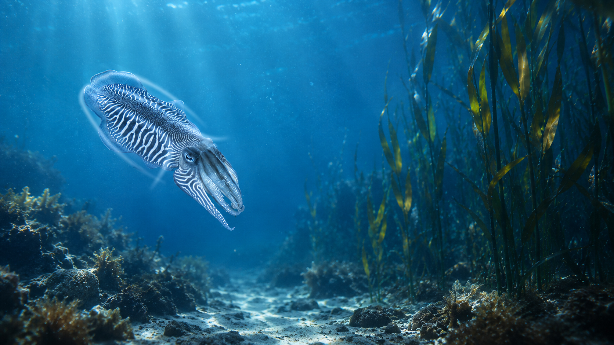
Drawing inspiration from the sleek, hydrodynamic profile of a cuttlefish, the enclosure features a distinct trapezoidal geometry softened by organic, rounded contours. This biomimetic approach replaces the rigid, utilitarian look of standard networking devices with fluid curves and refined surface treatments. The result is an ultra-compact product that is both striking in its uniqueness and naturally suited to modern interior spaces.
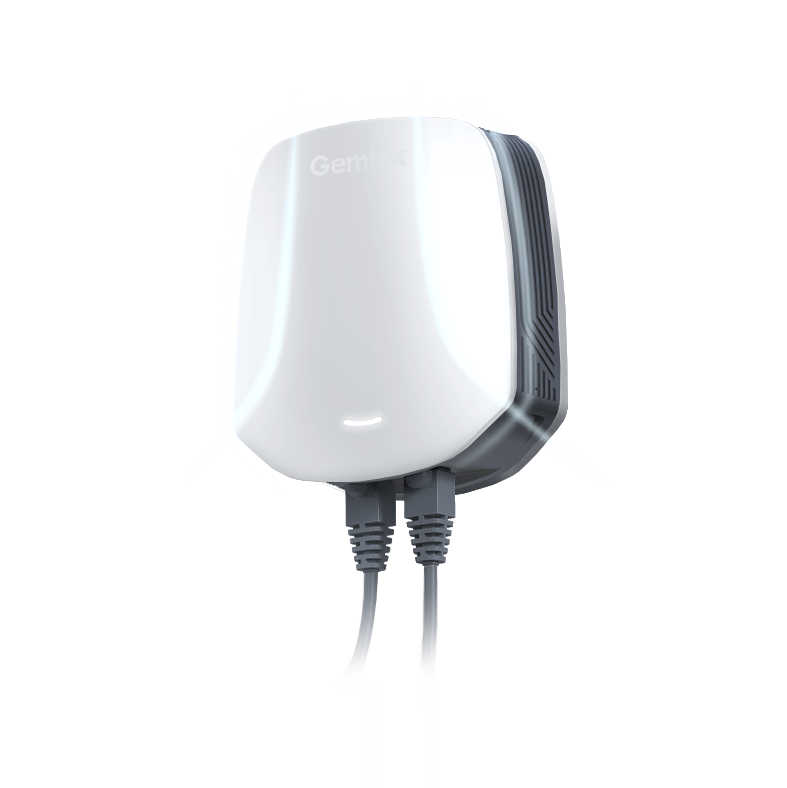
Iterative Evolution from Inspiration to Realization
In the design process, we drew inspiration from the natural beauty of cuttlefish, embarking on a journey to explore the interplay between form and function. We continuously experimented with different shapes and surface transitions, striving to achieve a balance of visual harmony and dynamic energy.
The surface transitions were meticulously crafted to convey a sense of fluidity, complemented by geometric segmentation that imbues the product with a modern, technological aesthetic while retaining the organic vitality of natural forms. The perforation design, as a key element, not only enhances visual depth and aesthetics but also underwent rigorous functional validation to ensure exceptional performance in ventilation and heat dissipation.
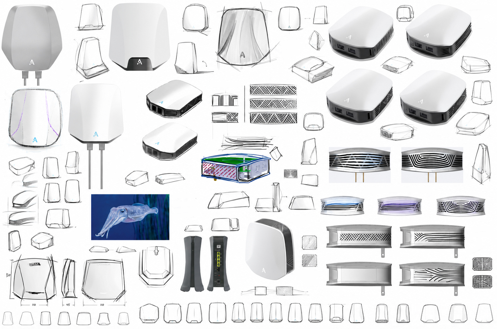
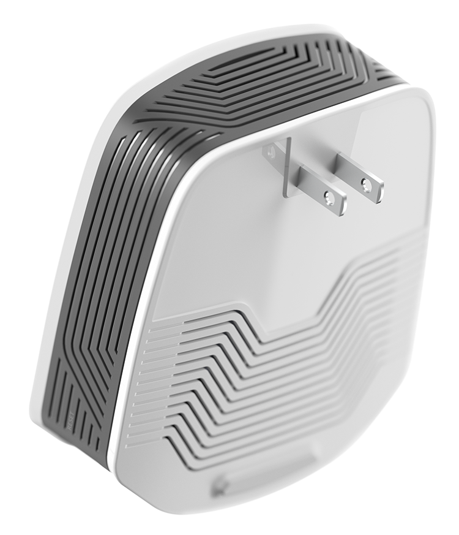
Maximizing Aesthetic Value within Strict Hardware Constraints
This design is built around a mass-produced PCB, which introduces significant constraints from the outset. Yet the primary goal remains uncompromised: achieving the most compact form factor possible. This demands exceptional precision in shaping and detailing, where every curve and surface must be carefully resolved. Close collaboration with mechanical engineers was critical to fine-tune component fit and tolerances, ensuring the final product honors the original industrial design intent while striking the right balance between functionality and aesthetics.
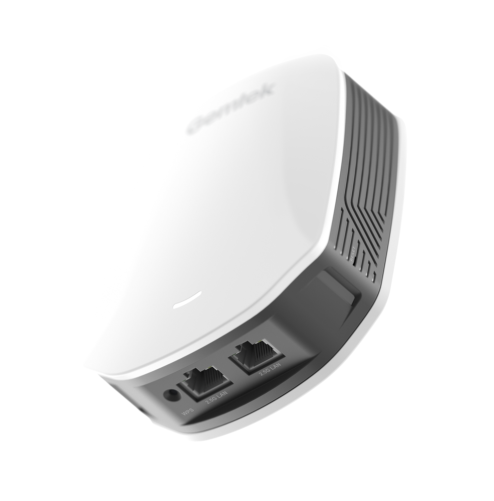
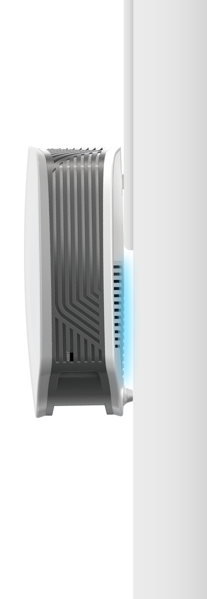
Working closely with thermal engineers, I optimized airflow direction while keeping the front face clean and uninterrupted. Ventilation openings are strategically placed along the sides and back, maximizing the open area for heat dissipation without compromising the product's visual identity. The bottom of the back cover features a curved surface to increase airflow clearance, with a raised bump that serves a dual purpose: housing a rubber footpad and providing structural support to prevent sagging when the product is plugged into a lower socket.
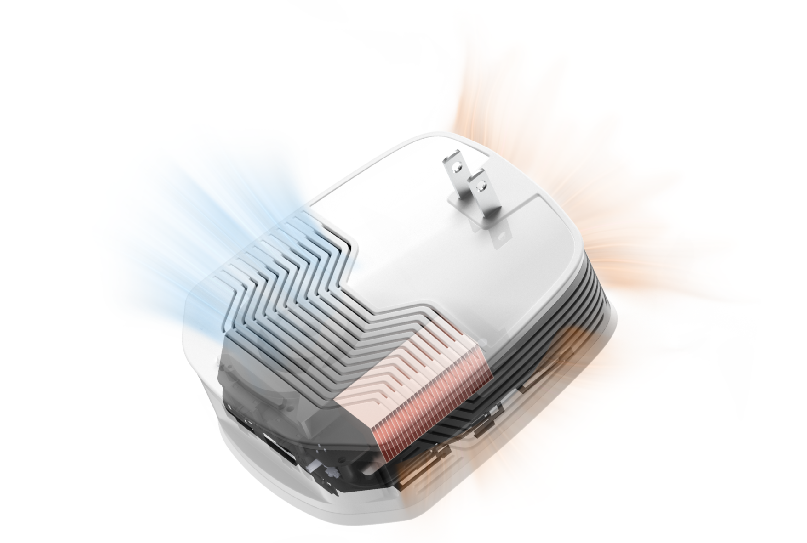
A convex surface on the back shell creates clearance for fan airflow while doubling as a sturdy contact point, stabilizing the product when tilted by the socket angle.
Given the product's weight, relying solely on the socket for support risks gradual tilting over time. The integrated bump and rubber foot provide a secondary support point, ensuring stable, long-term installation.
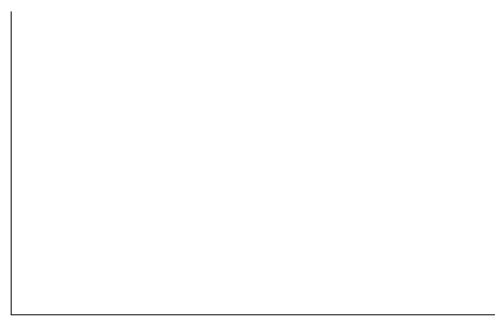
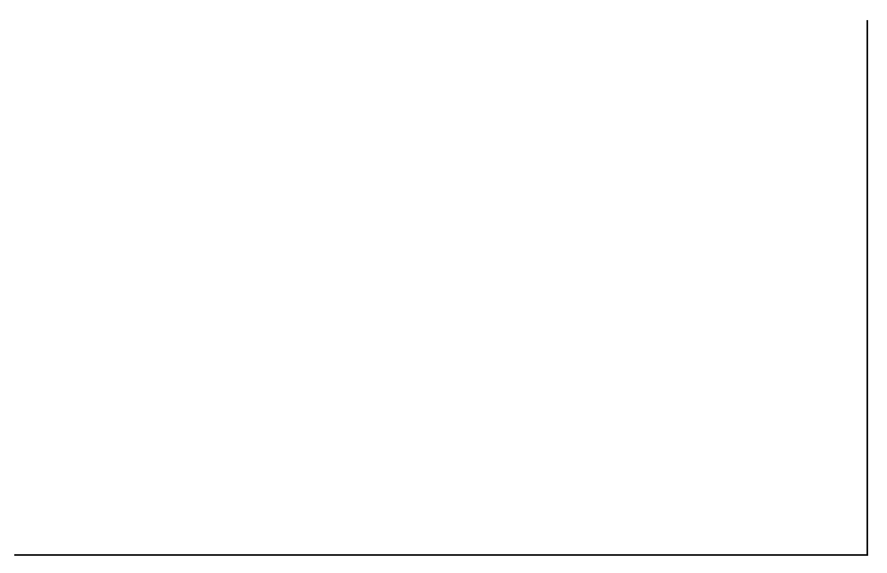
During the initial ID phase of the Ocean series, I collaborated with vendors to define and lock down the golden sample for the series' signature color palette, establishing a reliable benchmark for all future production runs. In parallel, I worked with mechanical engineers to source recycled plastic samples from material suppliers, evaluating their visual and tactile qualities to ensure recycled materials could be seamlessly integrated into the final product without compromising the design intent.

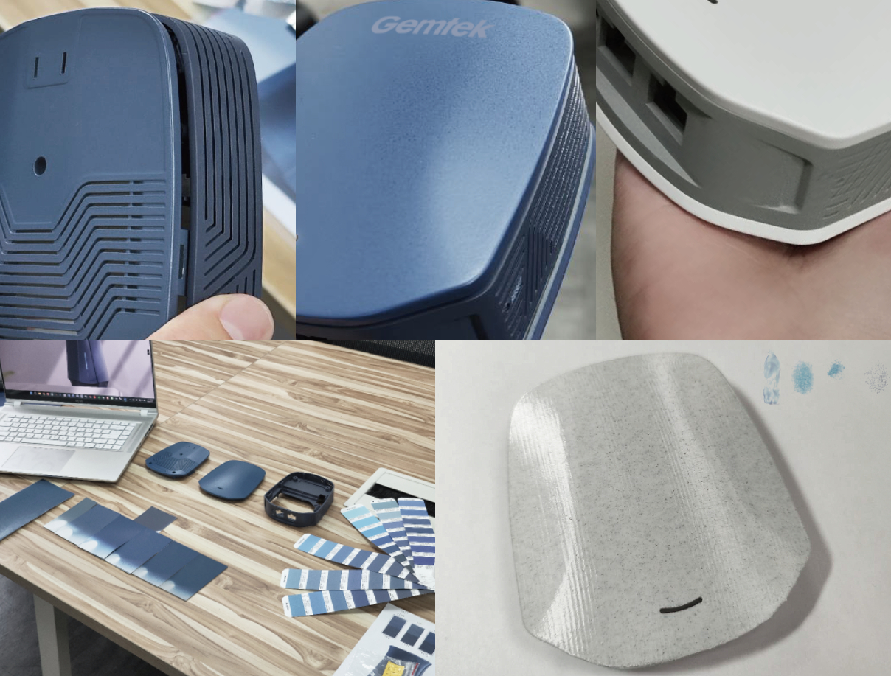
Selected by Italian firm Adant to house their advanced mesh technology, this design successfully bridged the gap between initial concept and commercial reality. The resulting strategic partnership led to an official product launch, with the finalized design proudly featured as the centerpiece of their official marketing and promotional videos.
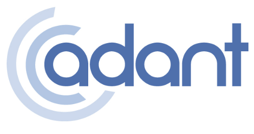
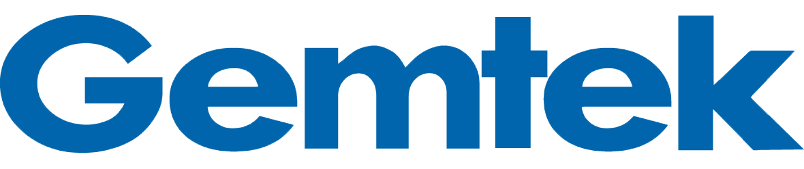
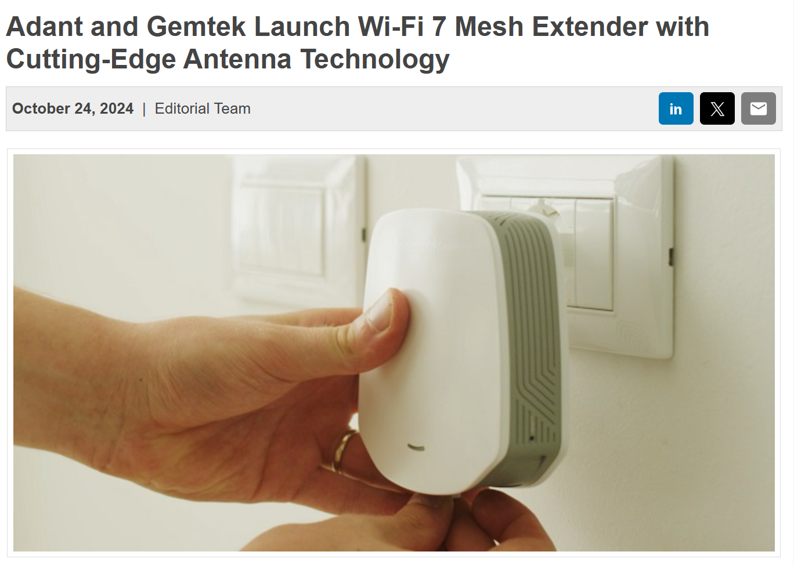

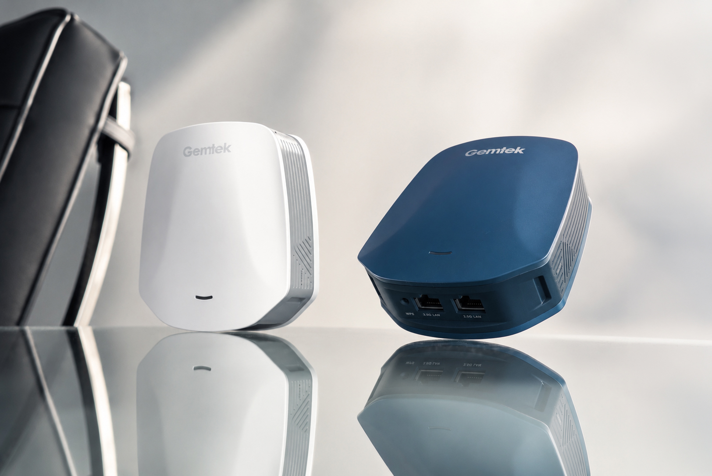
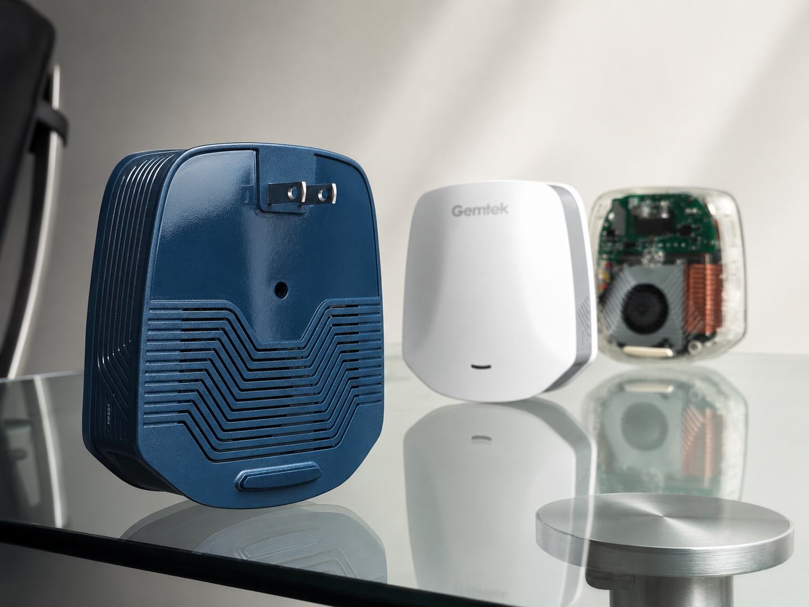
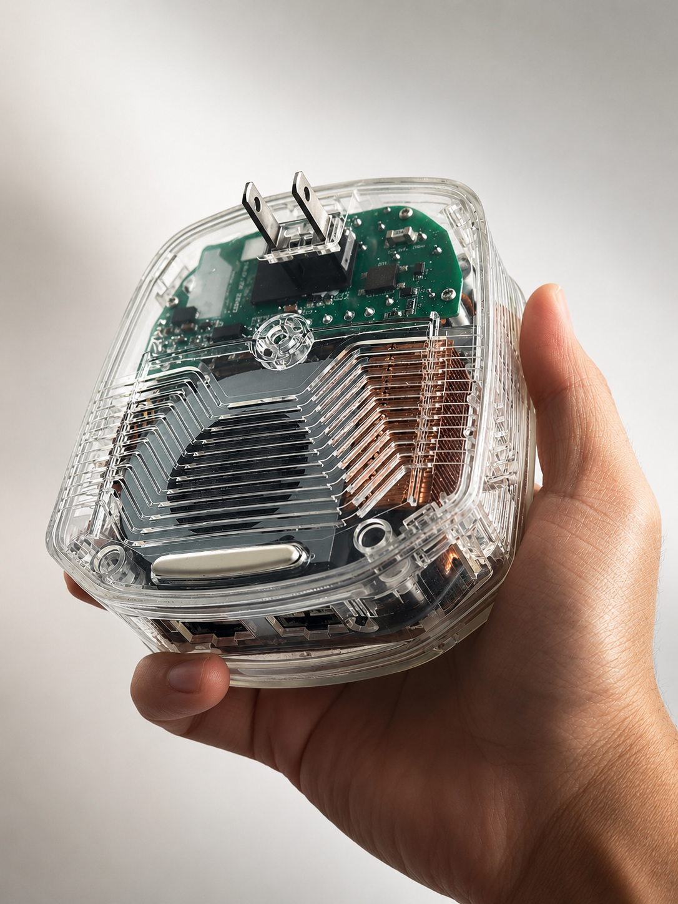
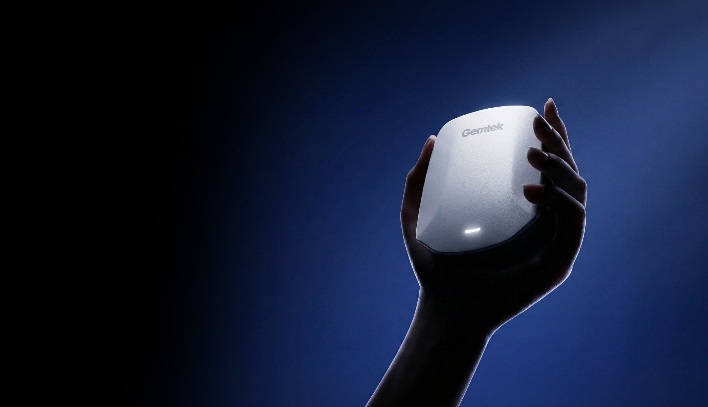